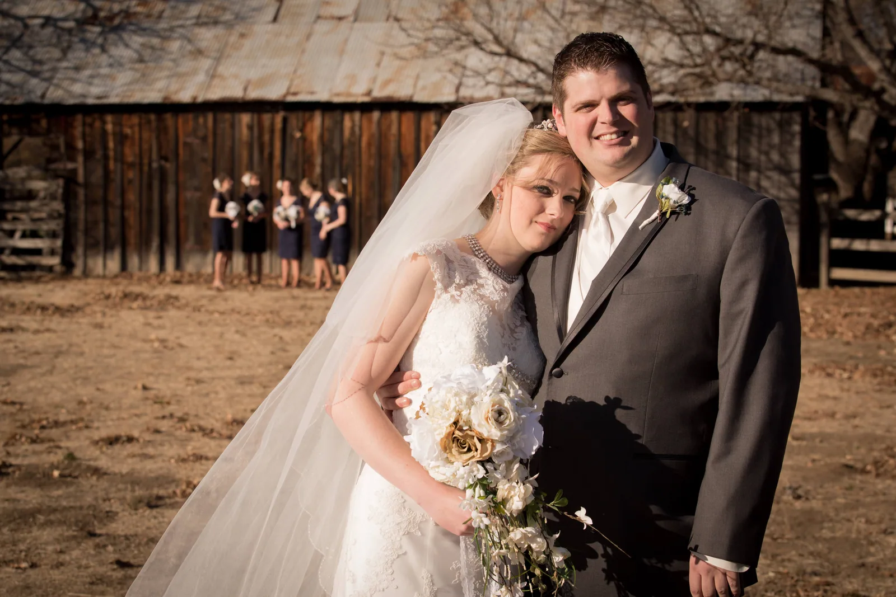

THE STORY SO FAR
One thing led
to another.
The big days and the little moments in between.
From the beginning
Opening the journal…
THE STORY SO FAR
The big days and the little moments in between.
From the beginning
Opening the journal…